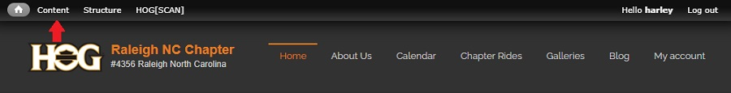
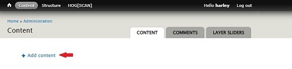

Create a Basic Page
When creating a basic page, by default, non-authenticated users can view the page.
If the page you are creating should only been seen by authenticated users, a best-practice is to give the page a Title, provide a Menu link title, Description and Parent item then Save the page. Open the page from the navbar, click the 'Access control' tab and configure the access control settings for the page. Submit the settings to save them prior to editing the page and filling in the content.
- Login to your account on raleighhog.com and there will be a smaller Navigation Bar (navbar) on top of the Chapter navbar.
- Hover your mouse over the 'Content' link and when the menu expands click the 'Add Content' link. The following screen will display. 
- If you clicked the 'Content' link, you will need to click the '+ Add Content' link on the page that pops-up. see image below 
- Note: Ignore 'Ask a question!' Clicking it will send it to an admin where it will not be seen. See your webmaster for any questions.
- The Add Content page displays showing links to the following; see image below
- Article - creates a blog entry, not used here and a different tutorial
- Basic page - creates a basic page. The purpose of this tutorial
- Event - creates a calendar event, not used here and a different tutorial
- Forum topic - forum has been turned off for our website, this is not used
- Gallery - adds images to the galleries, not used here and a different tutorial
- Newsletter - this will be done by the newsletter editor, not used here and a different tutorial
- Team Member - creates a team member, not used here and a different tutorial
- Click Basic Page. The following screen will display.
Fill in the required Title field. For example,
Frequently Asked Questions
- Body is where you put the information you want to appear on your page. The icons outlined in the ribbon are the ones you will use the most. Hover your mouse over them to see a brief description of what they are for.
Quick note regarding the Size button. I always choose 16 because, by default, all web pages are presented with a font size of 16 pixels. It makes for easier reading. By default, HOGScan presents pages at 14 pixels and it can be a little hard to read.
- Click the Provide a menu link box. You will want people visiting your site a way to see your page.
- After clicking the Provide a menu link box you are presented with the following;
Menu link title - by default this will be the same as the Title from step 4. In our example we used 'Frequently Asked Questions'. That title is long in the navbar and wraps so I choose to change it here to FAQ.
Description - Since I shortened the menu link title, I will fill in the full name here, 'Frequently Asked Questions'.
Parent item - This is where you want your page to appear in the navbar. The following step (4.4 explains how to select where you want your new page to appear.
Weight - All created pages default to a weight of zero. They will stack on top of each other as they are created. Give your page a weight so it displays in the proper order in your navbar.
- Click the down carat in the Parent item box to expand the dropdown and select where you want the new page to appear in the navbar.
The new page can be under one of the main navbar links or under a sublink.
- Click the Revision information link. Although optional, a best practice is to fill in the Revision log message field with a brief explanation of what was done.
Click the Save button to finish.
- This step is required if you want the page to be seen only by Authenticated user's.
Open your saved page and click the ACCESS CONTROL tab.
If your page should only be seen by an authenticated user, that is only seen by a member that is logged in, uncheck the two boxes for anonymous user as shown in the screenshot below.
Scroll to the bottom of the page and click the Submit button to save your changes.
NOTE: There is a defect where the Editor role cannot see the ACCESS CONTROL tab. Currently only the Webmaster or Primary Officer roles can make this change. The defect has been reported.
- The image below shows the location of the Submit button. You must click the Submit button to save your changes.
- If needed, you can grant update access to one, or more, people by adding their username in the Add user field. Click GRANT UPDATE ACCESS to expand the dropdown and see the field.
For instance, our recording secretary has update access to the Meeting Minutes page so the monthly meeting minutes can be updated. They do not need to be given the Editor role as the meeting minutes page is the only page they need to update.
Note; This field has to be populated with their username. If the member has not updated their username field with a name, you will have to use the default which is their HOG ID number. (Hint, have them edit their profile and update the username field. It's much easier to read a name rather than cross referencing a HOG ID number.)

- Success! You've created a new page for your website.